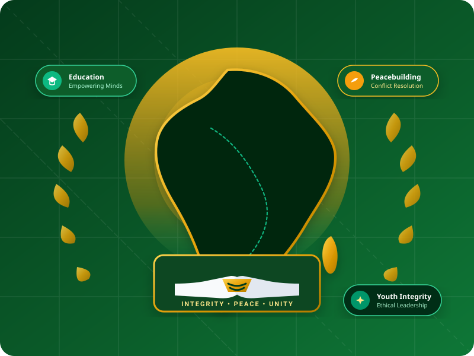
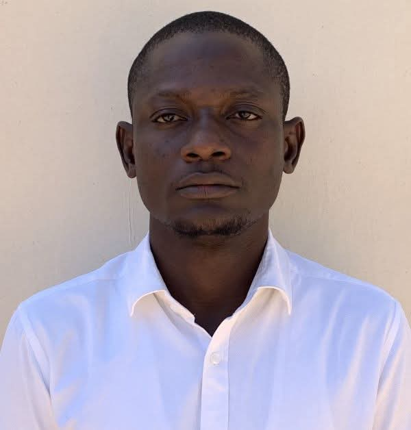

Pillar 1
Pillar 1
Youth Integrity & Leadership Development
Dedicated to instilling sound moral values, ethical conduct, transparency, and personal accountability among young Africans to build honorable leadership.
Building Integrity, Promoting Peace and Empowering African Youths.

Integrity • Peace • Unity
The Society for Youths Integrity and African Development (SYIAD) is a Non-Governmental Organization (NGO) committed to cultivating moral leadership, fostering harmonious inter-communal relationships, and championing the holistic development of youth across Africa.
Headquartered in Maiduguri, Nigeria, SYIAD operates with a deep commitment to the ethical grounding of young people, conflict prevention, cultural preservation, and sustainable community advancement.
SYIAD was established to address fundamental imperatives in African youth development: the propagation of honesty, the urgent need for peace and conflict resolution, and the cultivation of international cooperation.
Through collaborative partnerships with governmental authorities, civil society organizations, and international stakeholders, SYIAD works to instill virtues of harmony regardless of ethnic, racial, or geographical boundaries.
Guided by unwavering dedication to African unity, character formation, and mutual respect among global youth communities.
To empower African youths through integrity-deriven programs, peacebuilding, and leadership development.
A prosperous Africa where youths lead with integrity and drive development.
SYIAD's programmatic scope is structured around six core pillars established to deliver on our stated non-governmental mandate.
Pillar 1
Dedicated to instilling sound moral values, ethical conduct, transparency, and personal accountability among young Africans to build honorable leadership.
 Pillar 2
Pillar 2
Engaging youth as primary ambassadors for peaceful coexistence, dispute prevention, community dialogue, and conflict mitigation frameworks.
 Pillar 3
Pillar 3
Advancing educational awareness, learning opportunities, capacity building, and skill acquisition to enable youths to contribute productively to society.
 Pillar 4
Pillar 4
Upholding African cultural heritage, preserving indigenous history, and celebrating unity in cultural diversity for sustainable development.
 Pillar 5
Pillar 5
Promoting grassroots participation, civic responsibility, and collaborative initiatives designed to improve living standards in local communities.
 Pillar 6
Pillar 6
Fostering international youth dialogue, cross-cultural exchanges, and alliances with government and international bodies for global youth harmony.
The Society for Youths Integrity and African Development is governed by an executive council committed to ethical stewardship and the advancement of our organizational mandate.
Executive Council Member • Society for Youths Integrity and African Development
Executive Council Member • Society for Youths Integrity and African Development
Executive Council Member • Society for Youths Integrity and African Development

04Executive Council Member • Society for Youths Integrity and African Development
We welcome constructive engagement with government agencies, civil society organizations, community leaders, and youths across Africa and around the globe.